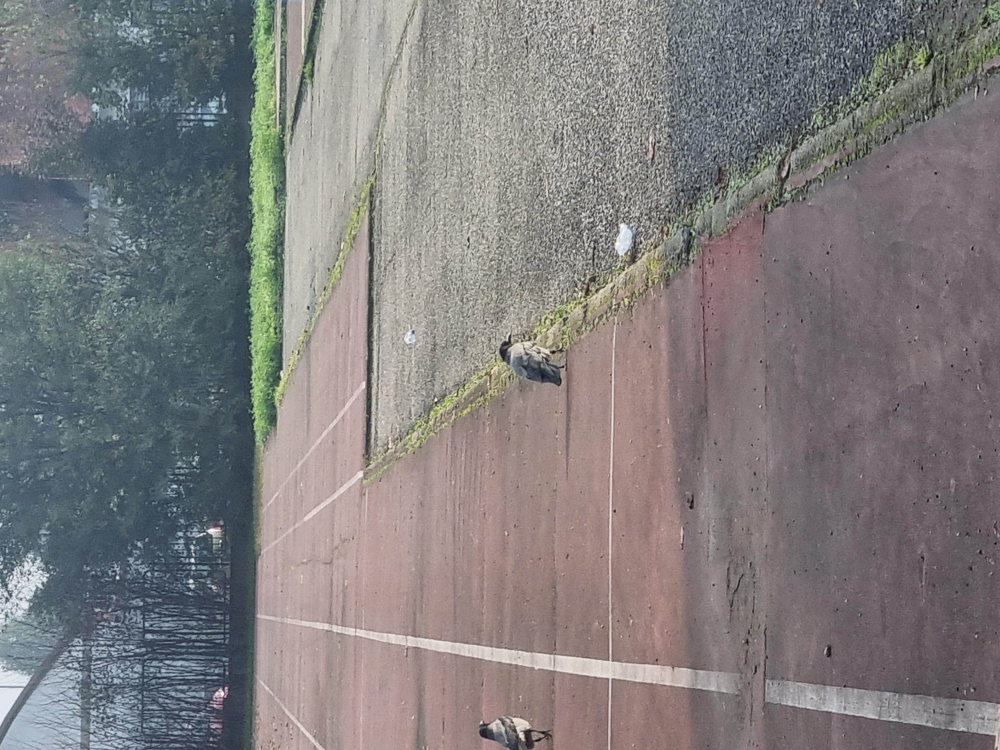
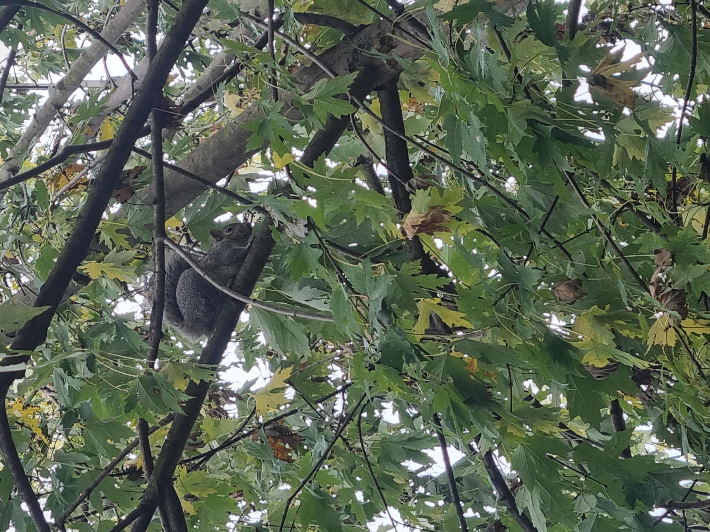
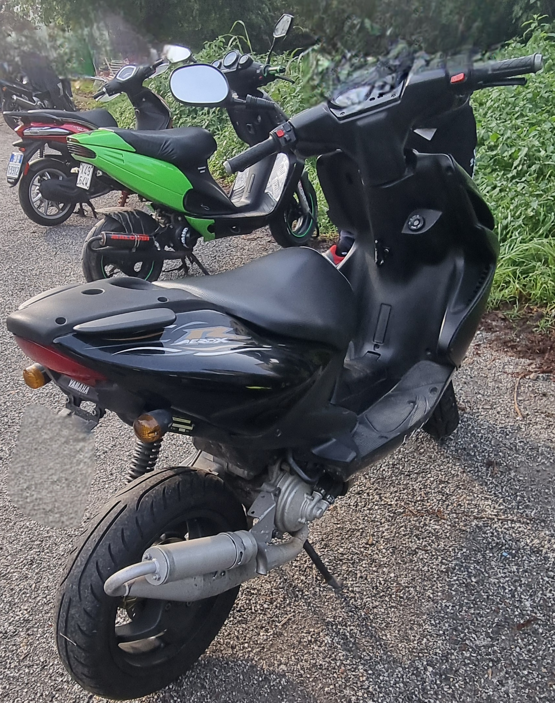

La biodiversità
Acer.Pseudoplatanus
appartiene alla tribu delle acereae. può crescere fino a 20-30metri con una chioma alta ed arrotondata
gli aceri sono molto comuni nelle zone temperate,le loro foglie assumono colori vivaci in autunno,passando dal verde al giallo,arancione e rosso,
gli aceri svolgono un ruolo molto importante per l'ambiente:
assorbimento di CO2 e produzione di ossigeno
purificazione dell' aria
raffrescamento urbano
protezione del suolo

corvus.cornix
appartiene alla tribù delle corvidae ed e molto comune nelle aree urbane,parchi, campi e periferie in tutta europa
è una specie molto adattabile ed intelligente, spesso vista in coppia o in piccoli gruppi
si nutre di vari tipi di cibo,dai piccoli animali ai rifiuti umani il che la rende molto comune in città
i corvi svolgono un ruolo molto importante per l'ambiente:
Controllo delle popolazioni di insetti e piccoli animali
riduzione dei rifiuti
dispersione dei semi
arricchimento del suolo
columba.livia
appartiene alla tribù dei columbini e sono molto comuni nelle aree urbane di tutto il mondo
presentano una varieta di colori,ma spesso mantengono il piumaggio tipico del piccione selvatico con sfumature grigie e un collo verde-viola
i piccioni domestici sono scoglievoli e si muovono spesso in gruppi, hanno un ottima capacita di orientamento e in passato sono stati utilizzati per spedire lettere
i piccioni svolgono un ruolo molto importante per l'ambiente:
riciclaggio dei rifiuti organici
dispersione dei semi
arricchimento dei suoli urbani
valore storico e culturale

sciurus.carolinensis
appartiene alla tribù delle scirudae e originario del nord america ma è stato introdotto in europa dove è diventato una specie invasiva
la sua pelliccia e generalmente di colore grigio,anche se puo variare,e ha una caratteristica coda folta
gli scoiattolisvolgono un ruolo molto importante per l'ambiente:
dispersione dei semi
controllo della vegetazione
controllo dei parassiti vegetali
indiretta influenza della fauna

moto a combustione
moto-scooter
le moto e gli scooter pur essendo mezzi di trasporto molto diffusi e pratici,hanno anche vari effetti negativi sull'ambiente e sulla salute.
ecco alcuni principali impatti negativi associati al loro uso:
inquinamento atmosferico
inquinamento acustico
consumo di risorse e impatto sulla produzione di carburanti
effetti sulla fauna selvatica
come si potrebbe ridurre tutto ciò?:
promuovere veicoli elettrici
regolamentazioni più severe sulle emissioni
promuovere l'uso dei mezzi pubblici e della mobilità condivisa
controlli del rumore